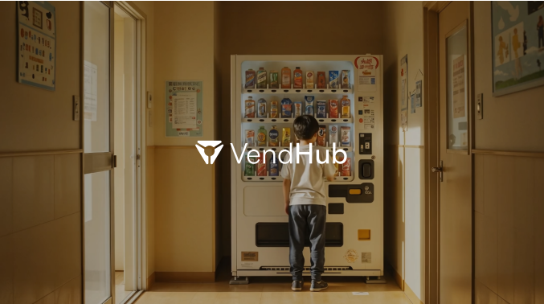
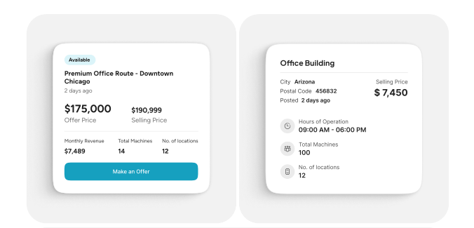
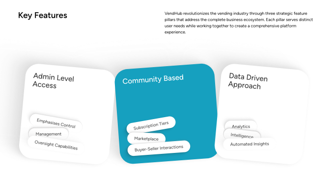
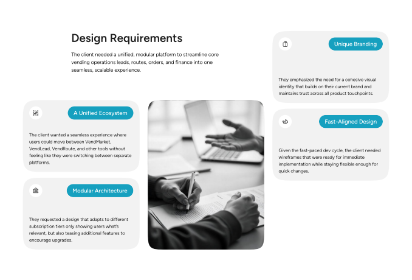
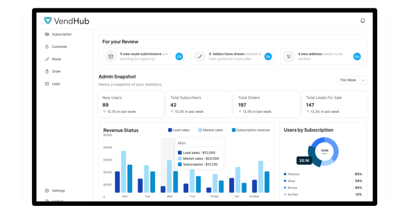
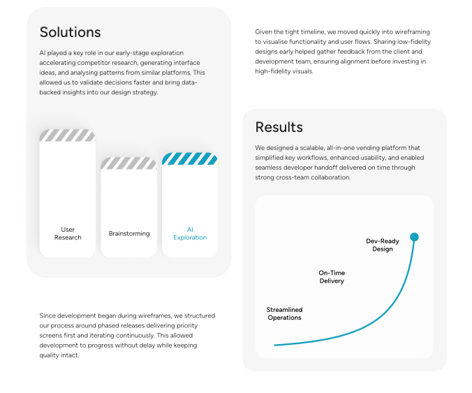
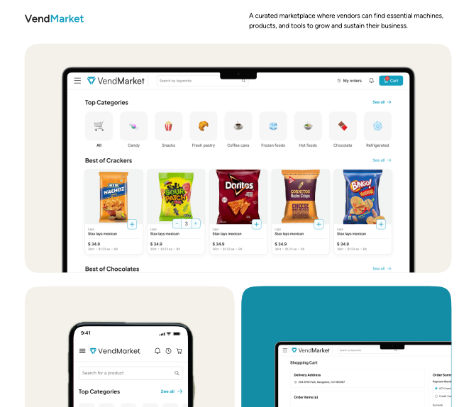
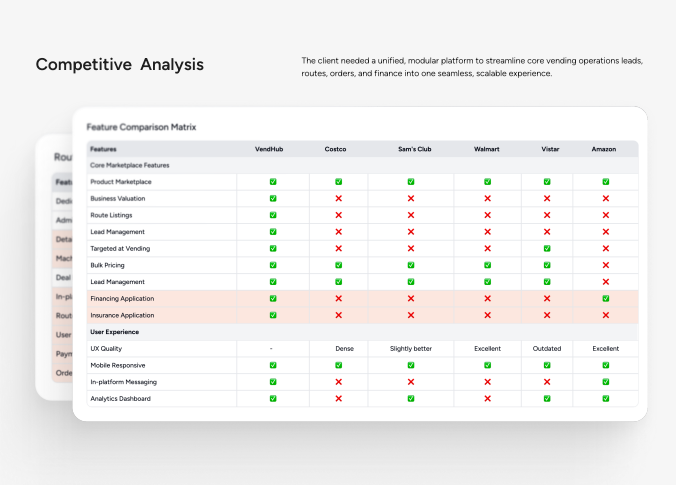

One ecosystem
Users needed to move between operational modules without feeling as though they were switching between unrelated products.
VendHub brought multiple vending-business workflows under one product. My role within a four-designer team focused on brand and visual strategy, wireframes, and assigned product flows—particularly VendMarket—while the product was already moving into development.

The client already operated a similar business in the US and came with domain knowledge, requirements and existing-product analytics. VendHub itself was created from scratch: an umbrella experience connecting modules such as VendMarket, VendRoute and VendLead for vending-business owners, buyers, sellers and administrators.
Users needed to move between operational modules without feeling as though they were switching between unrelated products.
Dense commercial and operational information had to support a decision rather than become another layer of complexity.
Development began during wireframing, so priority screens had to become implementation-ready while the system was still evolving.
I worked as a fellow designer in the four-person team, primarily across brand and visual strategy while also contributing wireframes and product flows. For my assigned modules, especially VendMarket, I defined flows, presented work to the client and made UX decisions within that scope.
VendMarket carried a high decision load. Rather than asking users to interpret scattered details, the experience needed to surface the evidence relevant to a purchase—product information, location and commercial context—close to the point where the user had to act.
The team combined client interviews, requirements, existing-product analytics, stakeholder knowledge and competitor research. This was not direct generative research with vending operators, so I treat it as stakeholder- and evidence-led discovery rather than user research.


The client brought experience from a similar US operation, giving the team a practical view of vending workflows and business requirements.
Existing-product analytics and stakeholder knowledge helped establish which information and operational areas mattered.
Competitor comparison helped the team examine marketplace, route, lead-management, payment, messaging and analytics patterns.
A key challenge was making VendMarket, VendRoute, VendLead and the wider VendHub experience feel connected while still supporting different tasks, roles and subscription access.

For the VendMarket areas I worked on, simplification meant reducing interpretation. Product and marketplace screens were organized so users could scan the information that mattered, compare options and move toward cart or purchase without unnecessary detours.



Keep commercial context and relevant product information close to the decision instead of distributing it across disconnected views.
Graph-heavy and operational views were simplified so both administrators and users could identify the signal before reading the detail.
Wireframes prioritized clear next actions and predictable paths through browsing, product detail, cart and purchase.
Low-fidelity work was shared early with the client and development team. Priority screens moved first, while later screens continued to evolve. That cadence taught me to treat simplification as a delivery tool as well as a usability principle: clearer hierarchy meant fewer ambiguities when a screen moved into implementation.

The work went through internal QA/QC rather than formal testing with vending operators. The client approved the screens for development, and the product entered implementation before continuing into subsequent development phases. I don't have a verified post-launch usability or conversion metric, so I don't attribute quantified product impact to the design.
Dense dashboard information was simplified, visual hierarchy was strengthened, and assigned flows were refined so implementation could continue without waiting for the entire product to be finalized.
I learned to make decisions at the pace of delivery: define what information is essential, communicate it clearly, validate quickly with the people building the product, and leave room for later phases.
VendHub strengthened the way I think about product simplification: not as removing information blindly, but as deciding what a person needs to understand now, what can wait, and how several workflows can still feel like one coherent system.